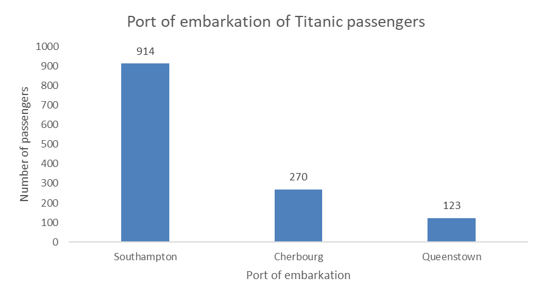
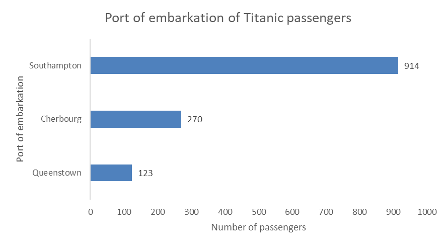
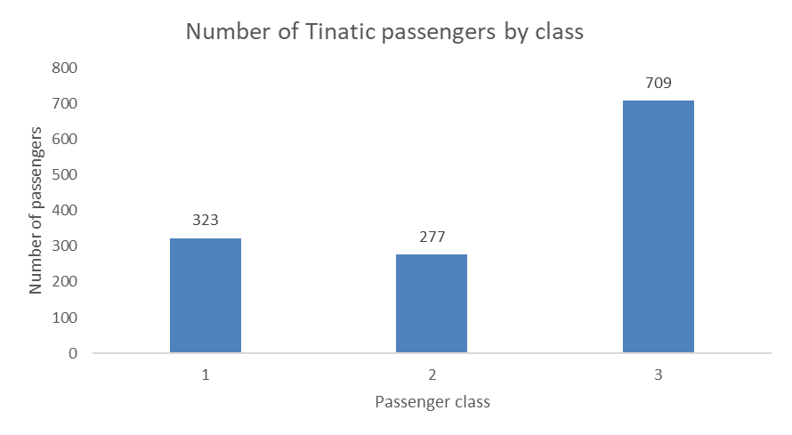
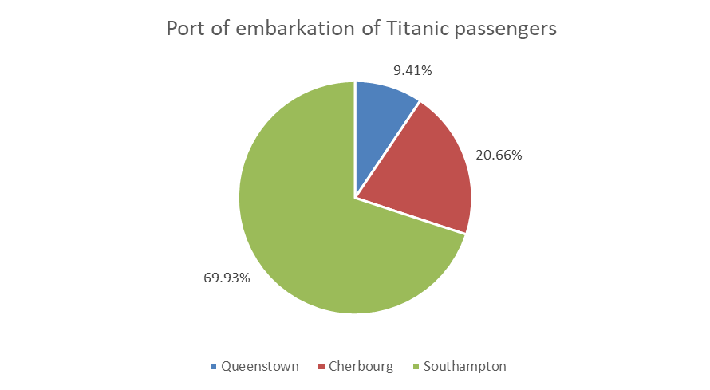
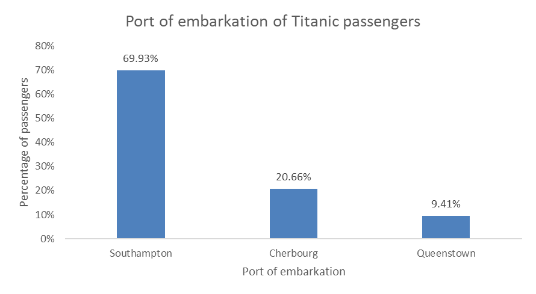
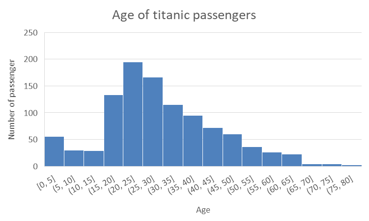
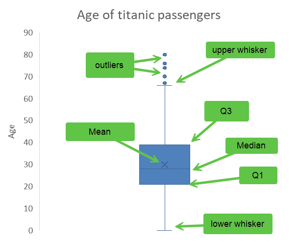

11 Visualizing single variables
11.1 Learning objectives
By the end of this chapter, you will be able to:
- Choose an appropriate visualization method for different types of variables.
- Visualize single variables in Excel.
- Format visualizations effectively.
11.2 Identifying the data and the purpose of the visualization
Data visualizations can be fun and colorful, but remember that their most important feature is their informativeness, and that not all data can or should be visualized. Often times, not producing a visualization is the best way to go.
So, before you start thinking about how to visualize your data, the first thing you will want to do is think about the purpose: What do you want to visualize, and why?
Asking yourself these important questions will save you a lot of time and unnecessary suffering down the road, by preventing you for embarking on a journey to fix
11.3 Choosing the right visualization method
While there is rarely a single best way to visualize a specific variable, there is also usually not so many options that make sense. Your main constraint is the type of data that you are working with, so that is the first question you have to answer before thinking about how it can be visualized. In fact, these are the exact same questions that you had to ask yourself in Chapter 7 and Chapter 8, where you learned to identify and summarize categorical and numerical data. In the next few sections, we explore the types of visualizations that are recommended for each type of data.
11.3.1 Visualizing a categorical variable
If you are working with a categorical variable, such as the port of embarkation of the Titanic passengers. The first thing you need to do is summarize the data by calculating the frequency (counts) and/or relative frequency (percentages), just like you learned in Chapter 7. Once you have summarized your data, now you can think about how to visualize that summary.
11.3.1.1 Visualizing frequencies
The most common and best way to visualize frequencies is the bar chart (or column chart in Excel). Like this one:

You can also do an horizontal bar chart, like this one:

If you are working with a nominal variable then you should order the categories from either highest count to lowest count, or the other way around, as in the examples above. However, if you are working with a ordinal variable (i.e., the categories have a logical order), then you should keep that logical order for your visualization. For example, you would not want to reorder the passenger classes when visualizing the number of passengers in each class, but keep the logical order of the classes, like this:

11.3.1.2 Visualizing relative frequencies
You can think of a percentages as a parts of a pie, the whole pie being 100%, so a popular although sometimes criticized way to visualize percentages is the pie chart.
11.3.1.3 
You can also use bar charts (horizontal or vertical) to visualize relative frequencies, like this:

11.4 Visualizing a numerical variable
11.4.0.1 Histogram

11.4.0.2 Box plot
The box plot is a visual representation of the descriptive statistics summary that you learned to do in Chapter 8. Here is our summary of the Age variable.
| Variable | N | Mean | SD | Var | Min | Q1 | Median | Q3 | Max |
|---|---|---|---|---|---|---|---|---|---|
| Age | 1046 | 29.9 | 14.4 | 207.8 | 0 | 21 | 28 | 39 | 80 |
The box plot below uses the first quartile (Q1) and the third quartile (Q3) to create a box, with a line inside the box representing the median. The mean is represented by an X, and the whiskers show the range of the data outside the box, and the outliers (extreme values) are show as dots outside of the whiskers. There are different acceptable methods to locate the whiskers, the simplest one is to use the min and the max, other common practices include placing them at 1.5 times the interquartile range (IQR) from the nearest quartile, at one standard deviation above and below the mean, or at the 2nd and 98th percentiles. As I am writing this, I still do not know how Excel determines where to put the whiskers, but it seems close to the 99th percentile and the 1st, this is just a guess at that point as my investigations have not been fruitful.
